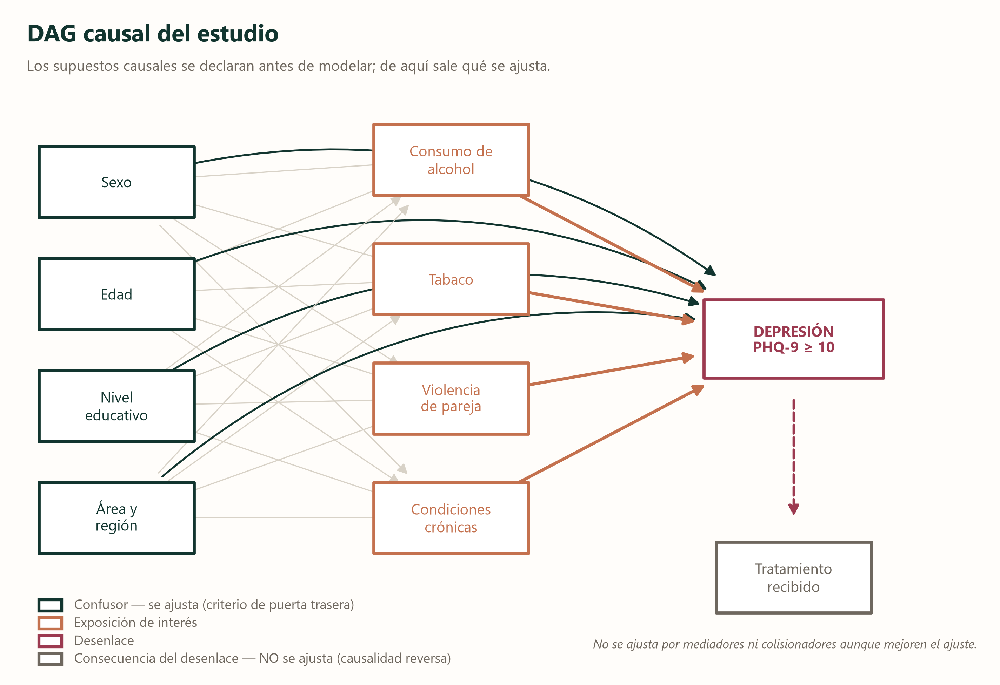
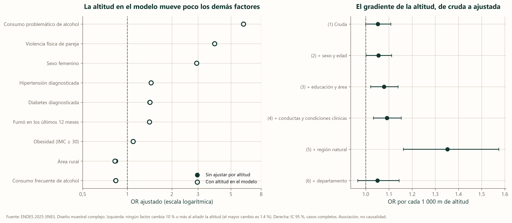

Qué puede mover estas cifras
Una cifra vale tanto como el proceso que la produjo: quién entró a la encuesta, cómo se midió cada cosa y qué se comparó con qué. Esta sección repasa con calma los tres tipos de error que pueden mover nuestros resultados, qué creemos que hacen en este estudio y qué hicimos al respecto.
Quién entra y quién no: el sesgo de selección
Hay sesgo de selección cuando las personas que llegan al análisis no representan a las que interesan, y la diferencia tiene que ver a la vez con lo que se estudia y con el resultado (Hernán et al., 2004). En esta encuesta hay tres puertas por donde puede entrar.
La primera es el universo. La ENDES entrevista a los hogares particulares y a sus miembros, y el cuestionario de salud lo responde una persona de 15 años o más elegida en cada hogar (INEI, 2026). Quedan fuera quienes no viven en un hogar particular. Si la sintomatología depresiva fuera más frecuente entre ellos, la prevalencia que estimamos quedaría algo por debajo de la real. Dentro del universo, la cobertura fue alta: se ejecutaron 36 750 de las 36 760 viviendas programadas, y los ponderadores se ajustan por la no respuesta de las viviendas (INEI, 2026).
La segunda es la no respuesta de cada persona, que es la que más nos toca. De las 33 569 personas que entraron al cuestionario de salud, 3 168 (9,4 %) no tienen el PHQ-9 completo: 777 no estaban, 899 rechazaron, 1 419 dejaron la entrevista a medias, 70 tenían una discapacidad que lo impidió y 3 salieron por otro motivo. De ellas sabemos poco: su sexo y su edad no figuran en el archivo. Lo que sí sabemos por el registro del hogar es que son más urbanas (84 % frente a 63 %) y viven algo más abajo (1 183 m en promedio frente a 1 414 m). Con eso no se puede decir hacia dónde mueven la prevalencia: si quienes no estaban o no quisieron responder tuvieran más síntomas, la estaríamos subestimando; si tuvieran menos, la estaríamos sobreestimando.
La tercera es nuestro propio recorte. El análisis con casos completos deja fuera a 1 145 personas con el nivel educativo ausente. No son datos perdidos al azar: el cuestionario pregunta primero si la persona asistió a la escuela y solo después, a quienes asistieron, por el nivel aprobado, de modo que estas personas son quienes nunca asistieron. Son en su mayoría mujeres (86 %), de 67 años en promedio, que viven en el área rural (75 %) y a más altitud (2 443 m frente a 1 376 m), y su prevalencia ponderada es de 16,0 % (IC 95 % 13,1 a 19,3), más del doble que la del resto (6,7 %).
Para medir cuánto importa su ausencia repetimos el modelo principal incluyéndolas como una categoría más. Ninguno de los 17 coeficientes comparables cambió un 10 % o más (el mayor fue de 6,4 %), y la categoría «sin educación» tiene un odds ratio de 2,07 frente a la educación superior. Mantenemos el modelo con casos completos como análisis principal y presentamos esta comparación como análisis de sensibilidad. La conclusión es doble: la exclusión no altera lo que se asocia con la depresión en los factores principales, y deja fuera a un grupo especialmente afectado, cuya ausencia sí puede debilitar la asociación cruda de la altitud (sección 8).
Cómo se midió: el sesgo de información
Es el que más nos toca. El PHQ-9 es un autorreporte, y todo autorreporte sobre temas sensibles puede teñirse de deseabilidad social, esa tendencia a responder lo que parece más aceptable (Krumpal, 2013). Además, define un caso por tamizaje y no por diagnóstico clínico. Frente a una entrevista diagnóstica, con el corte en 10 el cuestionario tiene una sensibilidad de 0,88 y una especificidad de 0,85 (Levis et al., 2019): algunas personas con el trastorno no alcanzan el puntaje y otras sin él sí lo hacen. Cuando la condición es poco frecuente, esos falsos positivos pesan mucho, y por eso hablamos de tamizaje positivo y no de depresión.
El error de clasificación podría no ser igual entre grupos, por ejemplo entre hombres y mujeres, entre el campo y la ciudad o entre quienes viven a distinta altura. En ese caso distorsiona las comparaciones en una dirección que no se conoce de antemano. Con datos de la ENDES se encontró que el PHQ-9 mide lo mismo según sexo, edad, nivel educativo, nivel socioeconómico, estado civil y área de residencia (Villarreal-Zegarra et al., 2019), lo que tranquiliza sobre la estructura del instrumento. No resuelve, sin embargo, si el punto de corte clasifica igual en todos los grupos. Un estudio en adultos mayores de los Himalayas y los Andes ilustra la diferencia entre tamizar y entrevistar: un tamizaje breve dio positivo en entre 5,3 % y 36,9 % según el lugar, mientras que la entrevista psiquiátrica encontró entre 1,8 % y 2,9 % de depresión en todos (Ishikawa et al., 2013).
El bloque de alcohol de la encuesta salta la pregunta siguiente cuando la respuesta es «sí», de modo que contar ítems en bruto penalizaría a los casos más graves, cuyo dato faltante significa «ya cumplió el criterio». Lo resolvimos agrupando por criterio con lógica «o». Es una decisión razonada, pero no contrastada con una medida de referencia, y deja un margen de error de medición en el consumo problemático, que es justamente el factor de mayor fuerza. Si ese error fuera igual entre quienes tienen y no tienen síntomas, lo esperable sería que acercara la asociación al 1, aunque ni siquiera eso está garantizado en un estudio concreto (Jurek et al., 2005).
La hipertensión y la diabetes son diagnósticos que informa la persona, y para recibirlos hay que haber llegado a un servicio de salud. Quien tiene menos acceso puede estar sin diagnóstico aunque tenga la enfermedad. No podemos medir ese efecto, y es una razón más para leer esas asociaciones con prudencia. La obesidad, en cambio, se calcula con el peso y la talla medidos por el entrevistador.
Qué se compara con qué: la confusión
Un factor confunde una asociación cuando cumple tres condiciones a la vez: es factor de riesgo del evento, se asocia con la exposición y no es un eslabón intermedio en la cadena causal entre ambos. El sexo, en la paradoja del tabaco de la sección 9, es el ejemplo más claro. Lo controlamos de dos maneras: estratificando, es decir, comparando dentro de cada grupo con el método de Mantel y Haenszel, y ajustando en el modelo multivariable. Para decidir qué entra al modelo nos apoyamos en un diagrama causal (Greenland et al., 1999), y para declarar que hay confusión usamos el criterio del cambio de 10 % en la estimación (Maldonado y Greenland, 1993; Mickey y Greenland, 1989). Los factores que podrían estar en el camino entre una exposición y la depresión, como la obesidad, no se ajustan como confusores sino que se estudian aparte, en la sección 11.
Qué se ajusta y qué no, dicho antes de modelar
El diagrama declara los supuestos del estudio antes de ver los resultados. Sexo, edad, educación y área se ajustan porque preceden a las exposiciones y al desenlace; el tratamiento recibido no se ajusta porque es consecuencia de la depresión, y ajustarlo introduciría otro sesgo.

La altitud como posible confusor
La altitud no viaja sola, y por eso nos preguntamos si confunde a los demás factores. La respuesta se mide con el mismo criterio: se compara el odds ratio de cada factor sin y con la altitud en el modelo. La altitud entra por pisos y no como recta, porque su relación con la depresión tiene forma de J.
| Factor | OR sin altitud (IC 95 %) | OR con altitud (IC 95 %) | Cambio (%) | Cambio sin región natural (%) |
|---|---|---|---|---|
| Sexo femenino | 2,94 (2,39 a 3,62) | 2,94 (2,38 a 3,61) | -0,1 | -0,3 |
| Área rural | 0,84 (0,71 a 0,99) | 0,82 (0,69 a 0,98) | -1,4 | -7,9 |
| Consumo problemático de alcohol | 6,07 (3,41 a 10,82) | 6,08 (3,40 a 10,85) | 0,1 | -1,7 |
| Consumo frecuente de alcohol | 0,83 (0,59 a 1,16) | 0,84 (0,60 a 1,17) | 0,8 | 1,7 |
| Fumó en los últimos 12 meses | 1,41 (1,07 a 1,87) | 1,41 (1,06 a 1,87) | -0,1 | 0,1 |
| Hipertensión diagnosticada | 1,45 (1,13 a 1,84) | 1,45 (1,13 a 1,85) | 0,1 | 0,7 |
| Diabetes diagnosticada | 1,41 (1,00 a 2,00) | 1,42 (1,01 a 2,01) | 0,6 | 1,8 |
| Obesidad (IMC ≥ 30) | 1,09 (0,92 a 1,31) | 1,09 (0,92 a 1,31) | 0,0 | 1,1 |
| Violencia física de pareja | 3,86 (2,74 a 5,44) | 3,88 (2,75 a 5,47) | 0,5 | — |
La altitud no confunde a ninguno de los factores principales. Al añadirla al modelo, el odds ratio cambia como máximo un 1,4 %, muy por debajo del 10 %. Como la región natural se deriva de la propia altitud y podría estar absorbiendo parte de su efecto, se repitió la comparación sin ella: el mayor cambio es de 7,9 % (área rural), también por debajo del umbral. La razón de prevalencias se comporta igual. Por eso las asociaciones que presenta el boletín se mantienen con o sin la altitud en el modelo.
Añadir la altitud casi no mueve a los demás factores
A la izquierda, cada factor aparece dos veces: sin la altitud en el modelo (punto lleno) y con ella (punto hueco). Mientras más separados estén los dos puntos de un factor, más lo movía la altitud; aquí casi coinciden, y eso es el resultado: la altitud no altera lo que se asocia con la depresión en esos factores. A la derecha, cada fila añade un ajuste al gradiente de la propia altitud, y la última compara solo dentro de cada departamento, donde el intervalo ya cruza el 1. Ese panel se discute en la sección 8.

Queda un límite que conviene decir con franqueza. Hay confusores que no medimos, como el ingreso, la lengua materna, la afiliación a un seguro de salud o la distancia a un servicio. Su ausencia deja un margen de confusión residual: la altitud, el área y la región pueden estar cargando con parte de ellos, y las asociaciones ajustadas lo son respecto de lo que sí medimos, no de todo lo que importa.
Una foto no tiene secuencia: la temporalidad
Como la encuesta es una foto, la exposición y el evento se miden a la vez. Todas las asociaciones de este boletín describen coexistencia, no secuencia, y esto vale para la altitud y para cada uno de los factores (Mann, 2003). Los estudios de seguimiento muestran por qué importa. En la violencia de pareja, la relación se ha observado en los dos sentidos (Devries et al., 2013); lo mismo ocurre con la diabetes (Mezuk et al., 2008), la obesidad (Luppino et al., 2010) y el tabaco (Fluharty et al., 2017), y en el caso de la hipertensión se ha descrito que la depresión antecede a la enfermedad (Meng et al., 2012). Además, la altitud que usamos es la del lugar donde la persona vive hoy y no la de donde vivió antes, lo que deja sin resolver el tiempo de exposición (Hernández-Vásquez et al., 2022).